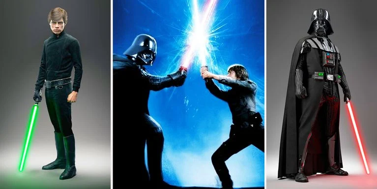

Diante dessa derrota, o Imério reage e começa a realizar uma série de investidas mais agressivas. Uma delas
é a Batalha de Hoth, que infestou o planeta gelado de grandes máquinas de guerra, os AT-AT.
Enquanto isso, Luke viaja até o planeta Dagobah para ser treinado por Yoda, um dos últimos Jedi vivo. E,
durante seu treinamento, seus aliados acabam sendo capturados por Darth Vader após a traição de Lando Calrissian
na cidade de Bespin. Han é preso dentro de uma estrutura de carbonita. Ele e Leia são levados até Jabba, o Hutt.
Luke luta contra Vader e perde sua mão. Em compensação, descobre que o vilão é seu pai.
